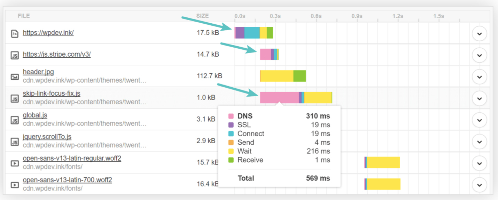

- 00 _导读 _ 什么是“The Fenix Project”？.md
- 00 开篇词 _ 如何构建一个可靠的分布式系统？.md
- 01 _ 原始分布式时代：Unix设计哲学下的服务探索.md
- 02 _ 单体系统时代：应用最广泛的架构风格.md
- 03 _ SOA时代：成功理论与失败实践.md
- 04 _ 微服务时代：SOA的革命者.md
- 05 _ 后微服务时代：跨越软件与硬件之间的界限.md
- 06 _ 无服务时代：“不分布式”云端系统的起点.md
- 07 _ 远程服务调用（上）：从本地方法到远程方法的桥梁.md
- 08 _ 远程服务调用（下）：如何选择适合自己的RPC框架？.md
- 09 _ RESTful服务（上）：从面向过程编程到面向资源编程.md
- 10 _ RESTful服务（下）：如何评价服务是否RESTful？.md
- 11 _ 本地事务如何实现原子性和持久性？.md
- 12 _ 本地事务如何实现隔离性？.md
- 13 _ 全局事务和共享事务是如何实现的？.md
- 14 _ 分布式事务之可靠消息队列.md
- 15 _ 分布式事务之TCC与SAGA.md
- 16 _ 域名解析系统，优化HTTP性能的第一步.md
- 17 _ 客户端缓存是如何帮助服务器分担流量的？.md
- 18 _ 传输链路，优化HTTP传输速度的小技巧.md
- 19 _ 如何利用内容分发网络来提高网络性能？.md
- 20 _ 常见的四层负载均衡的工作模式是怎样的？.md
- 21 _ 服务端缓存的三种属性.md
- 22 _ 分布式缓存如何与本地缓存配合，提高系统性能？.md
- 23 _ 认证：系统如何正确分辨操作用户的真实身份？.md
- 24 _ 授权（上）：系统如何确保授权的过程可靠？.md
- 25 _ 授权（下）：系统如何确保授权的结果可控？.md
- 26 _ 凭证：系统如何保证与用户之间的承诺是准确完整且不可抵赖的？.md
- 27 _ 保密：系统如何保证敏感数据无法被内外部人员窃取滥用？.md
- 28 _ 传输（上）：传输安全的基础，摘要、加密与签名.md
- 29 _ 传输（下）：数字证书与传输安全层.md
- 30 _ 验证：系统如何确保提交给服务的数据是安全的？.md
- 31 _ 分布式共识（上）：想用好分布式框架，先学会Paxos算法吧.md
- 32 _ 分布式共识（下）：Multi Paxos、Raft与Gossip，分布式领域的基石.md
- 33 _ 服务发现如何做到持续维护服务地址在动态运维中的时效性？.md
- 34 _ 路由凭什么作为微服务网关的基础职能？.md
- 35 _ 如何在客户端实现服务的负载均衡？.md
- 36 _ 面对程序故障，我们该做些什么？.md
- 37 _ 要实现某种容错策略，我们该怎么做？.md
- 38 _ 限流的目标与模式.md
- 39 _ 如何构建零信任网络安全？.md
- 40 _ 如何实现零信任网络下安全的服务访问？.md
- 41 _ 分布式架构中的可观测到底说的是什么？.md
- 42 _ 分析日志真的没那么简单.md
- 43 _ 一个完整的分布式追踪系统是什么样子的？.md
- 44 _ 聚合度量能给我们解决什么问题？.md
- 45 _ 模块导学：从微服务到云原生.md
- 46 _ 容器的崛起（上）：文件、访问、资源的隔离.md
- 47 _ 容器的崛起（下）：系统、应用、集群的封装.md
- 48 _ 以容器构建系统（上）：隔离与协作.md
- 49 _ 以容器构建系统（下）：韧性与弹性.md
- 50 _ 应用为中心的封装（上）：Kustomize与Helm.md
- 51 _ 应用为中心的封装（下）：Operator与OAM.md
- 52 _ Linux网络虚拟化（上）：信息是如何通过网络传输被另一个程序接收到的？.md
- 53 _ Linux网络虚拟化（下）：Docker所提供的容器通讯方案有哪些？.md
- 54 _ 容器网络与生态：与CNM竞争过后的CNI下的网络插件生态.md
- 55 _ 谈谈Kubernetes的存储设计理念.md
- 56 _ Kubernetes存储扩展架构：一个真实的存储系统如何接入或移除新存储设备？.md
- 57 _ Kubernetes存储生态系统：几种有代表性的CSI存储插件的实现.md
- 58 _ Kubernetes的资源模型与调度器设计.md
- 59 _ 透明通讯的涅槃（上）：通讯的成本.md
- 60 _ 透明通讯的涅槃（下）：控制平面与数据平面.md
- 61 _ 服务网格与生态：聊聊服务网格的两项标准规范.md
- 63 _ 基于Spring Boot的单体架构.md
- 64 _ 基于Spring Cloud的微服务架构.md
- 65 _ 基于Kubernetes的微服务架构.md
- 66 _ 基于Istio的服务网格架构.md
- 67 _ 基于云计算的无服务架构.md
- 春节特别放送（上）_ 有的放矢，事半功倍.md
- 春节特别放送（下）_ 积累沉淀，知行合一.md
- 用户故事 _ 詹应达：持续成长，不惧未来.md
- 结束语 _ 程序员之路.md
- 结课测试 _ 一套习题，测出你的掌握程度.md
16 _ 域名解析系统，优化HTTP性能的第一步
你好，我是周志明。从今天这节课开始，我们一起来学习下，如何引导流量分配到最合适的系统部件中进行响应。
那么在正式开始学习之前，我们先来了解下所谓的透明多级分流系统的定义。
理解透明多级分流系统的设计原则
我们都知道，用户在使用信息系统的过程中，请求首先是从浏览器出发，在DNS的指引下找到系统的入口，然后经过了网关、负载均衡器、缓存、服务集群等一系列设施，最后接触到了系统末端存储于数据库服务器中的信息，然后再逐级返回到用户的浏览器之中。
这个过程需要经过许许多多的技术部件。那么作为系统的设计者，我们应该意识到不同的设施、部件在系统中，都具有各自不同的价值：
- 有一些部件位于客户端或网络的边缘，能够迅速响应用户的请求，避免给后方的I/O与CPU带来压力，典型的如本地缓存、内容分发网络、反向代理等。
- 有一些部件的处理能力能够线性拓展，易于伸缩，可以通过使用较小的代价堆叠机器，来获得与用户数量相匹配的并发性能，并且应尽量作为业务逻辑的主要载体，典型的如集群中能够自动扩缩的服务节点。
- 有一些部件的稳定服务，对系统运行具有全局性的影响，要时刻保持着容错备份，维护着高可用性，典型的如服务注册中心、配置中心。
- 有一些设施是天生的单点部件，只能依靠升级机器本身的网络、存储和运算性能来提升处理能力，比如位于系统入口的路由、网关或者负载均衡器（它们都可以做集群，但一次网络请求中无可避免至少有一个是单点的部件）、位于请求调用链末端的传统关系数据库等，都是典型的容易形成单点部件。
所以，在对系统进行流量规划时，我们需要充分理解这些部件的价值差异。这里，我认为有两个简单、普适的原则，能指导我们进行设计。
第一个原则是尽可能减少单点部件，如果某些单点是无可避免的，则应尽最大限度减少到达单点部件的流量。
用户的请求在系统中往往会有多个部件都能够处理响应，比如要获取一张存储在数据库的用户头像图片，浏览器缓存、内容分发网络、反向代理、Web服务器、文件服务器、数据库等，都可能会提供这张图片。
所以，恰如其分地引导请求分流至最合适的组件中，避免绝大多数流量汇集到单点部件（如数据库），同时依然能够、或者在绝大多数时候能够保证处理结果的准确性，在单点系统出现故障时，仍能自动而迅速地实施补救措施，这便是系统架构中多级分流的意义。
那么，缓存、节流、主备、负载均衡等措施，就都是为了达成该目标所采用的工具与手段，而高可用架构、高并发架构，则是通过该原则所获得的价值。
许多介绍架构设计的资料呢，都会以“高可用、高并发架构”为主题，主要聚焦于流量到达服务端后，如何构建强大的服务端集群来应对。
而在这个小章节中，我们是以“透明多级分流系统”为主题，聚焦于流量从客户端发出，到达服务端处理节点前的过程，并会去了解在这个过程中对流量削峰填谷的基础设施与通用组件。
第二个原则是奥卡姆剃刀原则，它更为关键。
奥卡姆剃刀原则- Entities should not be multiplied without necessity.- 如无必要，勿增实体。- —— Occam’s Razor，William of Ockham
作为一个架构设计者，你应该对前面提到的多级分流的手段，有一个全面的理解与充分的准备。同时你也要清晰地意识到，这些设施并不是越多越好，在实际构建系统的时候，你要在有明确需求、真正有必要的时候，再去考虑部署它们。
因为并不是每一个系统都要追求高并发、高可用的，从系统的用户量、峰值流量和团队本身的技术与运维能力出发，来考虑如何布置这些设施，才是最合理的做法。
在能满足需求的前提下，最简单的系统就是最好的系统。
所以，在这个章节的第一节课当中，我们就先来学习一个相对简单，但又是全世界最大规模的查询系统，即DNS域名解析查询系统，我们一起来看看它是如何实现多级分流的。
DNS的工作原理
我们都知道，DNS的作用是把便于人类理解的域名地址，转换为便于计算机处理的IP地址。
说到DNS，我想到了一件事，你可能会觉得有点儿好笑：我在刚接触计算机网络有一小段时间以后，一直都把DNS想像成是一个部署在世界上某个神秘机房里的大型电话本式的翻译服务。直到后来，当我第一次了解到DNS的工作原理，也知道了世界根域名服务器的ZONE文件只有2MB大小，甚至可以打印出来物理备份的时候，我就对DNS系统的设计惊叹得不得了。
域名解析对于大多数信息系统，尤其是基于互联网的系统来说是必不可少的组件，可是现在想想，它在我们的开发工作里其实根本没有特别高的存在感，通常它都是不会受到重点关注的设施。这就导致了很多程序员还不太了解DNS本身的工作过程，以及它对系统流量能够施加的影响；而且，DNS本身就堪称是示范性的透明多级分流系统，非常符合我们这个章节的主题，也很值得我们去借鉴。
无论是使用浏览器，还是在程序代码中访问某个网址域名，如果没有缓存的话，都会先经过DNS服务器的解析翻译，找到域名对应的IP地址，才能开始通讯。
后面我就以www.icyfenix.com.cn为例吧。这项操作是操作系统自动完成的，一般不需要用户程序的介入。
不过，DNS服务器并不是一次性地把www.icyfenix.com.cn直接解析成IP地址的，这个解析需要经历一个递归的过程。
首先，DNS会把域名还原为“www.icyfenix.com.cn.”。注意这里最后多了一个点“.”，它是“.root”的意思。早期的域名都必须得带这个点，DNS才能正确解析，不过现在几乎所有的操作系统、DNS服务器都可以自动补上结尾的点号了。
然后，DNS就开始进行解析了。它的解析步骤是这样的：
第一步，客户端先检查本地的DNS缓存，查看是否存在并且是存活着的该域名的地址记录。
DNS是以存活时间（Time to Live，TTL）来衡量缓存的有效情况的，因此如果某个域名改变了IP地址，它也无法去通知缓存了该地址的机器来更新或失效掉缓存，只能依靠TTL超期后重新获取来保证一致性。后续每一级DNS查询的过程，都会有类似的缓存查询操作，所以我就不重复说了。
第二步，客户端将地址发送给本机操作系统中配置的本地DNS（Local DNS）。这个本地DNS服务器可以由用户手工设置，也可以在DHCP分配时或者在拨号时，从PPP服务器中自动获取。
第三步，本地DNS收到查询请求后，会按照“是否有www.icyfenix.com.cn的权威服务器”→“是否有icyfenix.com.cn的权威服务器”→“是否有com.cn的权威服务器”→“是否有cn的权威服务器”的顺序，依次查询自己的地址记录。如果都没有查询到，本地DNS就会一直找到最后点号代表的根域名服务器为止。
这个步骤里涉及了两个重要名词，你需要好好掌握：
- 权威域名服务器（Authoritative DNS）：是指负责翻译特定域名的DNS服务器，“权威”的意思就是说，服务器决定了这个域名应该翻译出怎样的结果。DNS翻译域名的时候，不需要像查电话本一样刻板地一对一翻译，它可以根据来访机器、网络链路、服务内容等各种信息，玩出很多花样。权威DNS的灵活应用，在后面的内容分发网络、服务发现等课程内容中都还会涉及到。
- 根域名服务器（Root DNS）：是指固定的、无需查询的顶级域名（Top-Level Domain）服务器，可以默认为它们已内置在操作系统代码之中。全世界一共有13组根域名服务器（注意并不是13台，每一组根域名都通过任播的方式建立了一大群镜像，根据维基百科的数据，迄今已经超过1000台根域名服务器的镜像了），之所以有13这个数字的限制是因为，DNS主要是采用UDP传输协议（在需要稳定性保证的时候也可以采用TCP）来进行数据交换的，未分片的UDP数据包在IPv4下最大有效值为512字节，最多可以存放13组地址记录。
第四步，现在假设本地DNS是全新的，上面不存在任何域名的权威服务器记录，所以当DNS查询请求按步骤3的顺序，一直查到根域名服务器之后，它将会得到“cn的权威服务器”的地址记录，然后通过“cn的权威服务器”，得到“com.cn的权威服务器”的地址记录，以此类推，最后找到能够解释www.icyfenix.com.cn的权威服务器地址。
第五步，通过“www.icyfenix.com.cn的权威服务器”，查询www.icyfenix.com.cn的地址记录。这里的地址记录并不一定就是指IP地址，在RFC规范中，有定义的地址记录类型已经多达几十种，比如IPv4下的IP地址为A记录，IPv6下的AAAA记录、主机别名CNAME记录，等等。
我给你举一个例子。假设一个域名下配置了多条不同的A记录，此时权威服务器就可以根据自己的策略来进行选择，典型的应用是智能线路：根据访问者所处的不同地区（如华北、华南、东北）、不同服务商（如电信、联通、移动）等因素，来确定返回最合适的A记录，将访问者路由到最合适的数据中心，达到智能加速的目的。
可见，DNS系统多级分流的设计，就让DNS系统能够经受住全球网络流量不间断的冲击，但它也并不是没有缺点。
典型的问题就是响应速度会受影响。在极端情况（如各级服务器均无缓存）下，域名解析可能会导致每个域名都必须递归多次才能查询到结果，显著影响传输的响应速度。
如下图所示，你可以看到其高达310毫秒的DNS查询速度：

所以，为了避免产生这种问题，专门就有一种前端优化手段，叫做DNS预取（DNS Prefetching）：如果网站后续要使用来自于其他域的资源，那就在网页加载时便生成一个link请求，促使浏览器提前对该域名进行预解释，如下所示：
<link rel="dns-prefetch" href="//domain.not-icyfenx.cn">
而另一种可能更严重的缺陷，就是DNS的分级查询意味着每一级都有可能受到中间人攻击的威胁，产生被劫持的风险。
我们应该都知道，要攻陷位于递归链条顶层的（如根域名服务器，cn权威服务器）服务器和链路是非常困难的，它们都有很专业的安全防护措施。但很多位于递归链底层的、或者来自本地运营商的Local DNS服务器，安全防护就相对松懈，甚至不少地区的运行商自己就会主动进行劫持，专门返回一个错的IP，通过在这个IP上代理用户请求，以便给特定类型的资源（主要是HTML）注入广告，进行牟利。
所以针对这种情况，最近几年出现了一种新的DNS工作模式：HTTPDNS（也称为DNS over HTTPS，DoH）。它把原本的DNS解析服务开放为一个基于HTTPS协议的查询服务，替代基于UDP传输协议的DNS域名解析，通过程序代替操作系统直接从权威DNS，或者可靠Local DNS获取解析数据，从而绕过传统Local DNS。
这种做法的好处是完全免去了“中间商赚差价”的环节，不再惧怕底层的域名劫持，能有效避免Local DNS不可靠导致的域名生效缓慢、来源IP不准确、产生的智能线路切换错误等问题。
小结
这节课作为“透明多级分流系统”的第一讲，我给你介绍了这个名字的意义与来由。在开发过程中没有太多存在感的DNS系统，其实就很符合透明和多级分流的特点。所以我也以此为例，给你简要介绍了它的工作原理。
根据请求从浏览器发出到最终查询或修改数据库的信息，除了DNS以外，还会有客户端浏览器、网络传输链路、内容分发网络、负载均衡器和缓存中间件这些位于服务器、数据库之外的组件，可以帮助分担流量，便于我们构建出更加高并发、高可用的系统。在后面的几节课中，我们就会逐一来探讨它们的工作原理。
一课一思
思考一下，你开发的系统中，有使用过哪些分流手段？欢迎给我留言，分享你的做法。
如果你觉得有收获，也欢迎把今天的内容分享给更多的朋友。感谢你的阅读，我们下一讲再见。
© 2019 - 2023 Liangliang Lee. Powered by gin and hexo-theme-book.